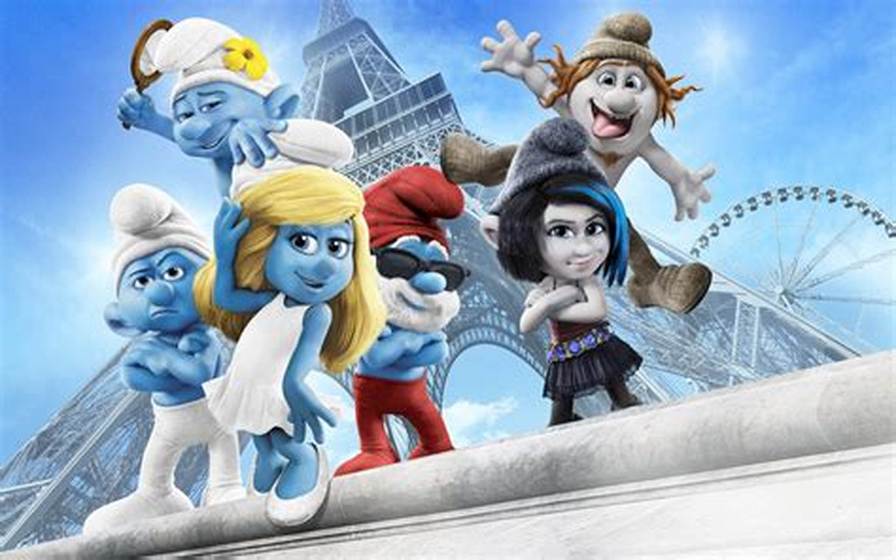

Brainy Smurf thinks he’s smarter than he really is, and he is certain that he’s smarter than everyone else. This is a Smurf who does not suffer from self-doubt. In fact, he refuses to admit when he’s wrong, and whenever someone proves it, he makes up an excuse. Brainy considers himself the most responsible member of the band and has proclaimed himself the right-hand man to Papa Smurf. He’s often repeating phrases such as, "Like Papa Smurf always says…" or "Papa Smurf is always right, and when he says that…" (and at times he finishes his sentences with the word "Right?"). The other Smurfs just roll their eyes and find inventive ways to shut him up. One running gag is that they "eject" him from the scene - unseen to the audience, an annoyed Smurf gives him a wallop in the butt (a kick), and we see him flying through the air. Despite his tendency to sometimes act like a spoilsport, he's still respected and deeply loved by the village. As long as he's not pushing his luck... Between the release of "Little Comics Collection" version of "The Hundredth Smurf" and before the album release of "The Black Smurfs" (Brainy's glasses were originally exclusive to the 1961 Smurfs cartoon show prior to the album release of "The Black Smurfs"), the only thing that visually separates Brainy from the other Smurfs is his tendency to use his declarative finger when he makes speeches.
Comic Book/2021 TV Series Version Brainy is the most self-centered of the Smurfs, even more so than Vanity; he annoys almost everyone, up to and including Papa Smurf. Brainy has a penchant for showing off, claiming that he knows everything about everything, although the only things he knows well are things about himself... and even that is debatable. Brainy even claims to be his own favorite subject. Despite this, he is well-liked whenever he's not being a bossy know-it-all, which is all-too-frequently the case. His house is filled with of stacks of books all written by himself. The books are either manuals or encyclopedias. Brainy always wants someone to read them, but even the nicest people turn them down... or merely pretend to like them for Brainy's benefit. He enjoys being a leader, always eager to be one in almost any activity. He's dramatic in nature, often inflating problems or freaking out far more than other Smurfs, which can lead to them yelling at him. In general, he's not very patient. Brainy is very cowardly. In one episode of the 2021 cartoon show, he is faced with the possibility of getting eaten by Azrael or Gargamel and panics. When the Smurfs rescue him, he believes Gargamel and Azrael are back and he suggests eating Dimwitty. When he gets out of the pot he was in, he says he was joking, but he doesn't sound very convincing. In "Where's Papa Smurf?", when Brainy hits Papa Smurf in an accident with his smurfway, he unsuccessfully blames Clumsy for it. Brainy constantly fails to use his intelligence constructively and for the benefit of other Smurfs, including himself. He almost always believes his book-smarts are better than the hand-on smarts of the other Smurfs, which leads him to be either whacked in the head (often with a mallet), booted out of the village, or in a rivalry with another Smurf, where Brainy eventually humiliates himself. Basically, Brainy is a bruised ego who consistently bruises it himself. In the 2021 TV series, Brainy is a lot less egotistical and more knowledgeable and smarter. He still brags about being smart and still annoying, but he is very kind, caring, humble, and selfless. Despite his little patience for tricks and fun, it does not always seem this way. In "Doctor Brainy & Mister Dumb", Clumsy and Dimwitty are alerted from the bell as members of the fire brigade, but it turns out that Brainy is just enjoying playing on the ladder. However, he denies that he was doing this when Clumsy and Dimwitty see him, as they would be surprised to see such a serious Smurf playing.
Apart from being Papa Smurf's apprentice, Brainy can (more often than not) be the primary or supporting source of discourse within the village. While he is knowledgeable when it comes to magic and potion making, Brainy often over-estimates himself, or doesn’t clearly follow directions, thinking that his way is best, which can cause many problems for both him and everyone else. He will often nosily police Smurfs doing their jobs or chores as if he was an expert, even though it's incredibly rare it actually helps. Occasionally, he inspects Smurfs at night, though he often gets hit by a Smurf who wants him to be quiet. In the 2021 cartoon series, he is often seen doing this with a smurfway, which is a parody of segways. Brainy causes a lot of problems for the Smurfs sometimes. This is mostly because all he does is make things worse. An example is when he forced everyone to be so quiet in "Unsound Smurfs", that not even a needle can drop, only because Papa Smurf wanted some peace and quiet to get some sleep. He went so far to make everything quiet, he cast a sound-proof barrier around the village that made no sound get in or out, but this also prevented anyone else from entering. He also believes that he is smarter than everyone else and that he should be in charge. Sadly, most of his ideas (such as mind-controlling in "Smurf, Yes Smurf!") go wrong, and he usually finds a scapegoat for the mishaps he causes.

"We have this annoying Smurf who lives in our village who wears spectacles and is always going
that we 'Should beware' and that we're 'Not supposed to be like that' and 'I'll tell Papa Smurf
about that if you don't'. We all dislike him because of his constant meddling."
"What?! But I..." (He's forcibly silenced)
Brainy is the least liked out of all the Smurfs. This is proven in the episode "The Masked Pie
Smurfer". A masked Smurf has given every Smurf a chance to get back at someone they dislike by
just giving him some smurfberries. In exchange for the berries, the Masked Pie Smurfer will throw
Pie at the designated Smurf's face. Unfortunately for Brainy, he was a main target. If the Smurfs
play pranks on one another, Brainy is often involved.
In "The Talented Justa Smurf", he is one of the Smurfs that Justa (who had just become "Mimic
Smurf") imitates. He is visibly annoyed by his imitation while all of the Smurfs laugh. This
is more proof that various Smurfs dislike his ramblings.
In the comic book "King Smurf", he is convinced that the Smurfs will elect him to replace Papa
Smurf during his absence, but he ultimately receives only two votes, his own and Dopey's.
The main reason why the Smurfs dislike him is due to his endless chattering and his occasional use
of abusing his role as Papa Smurf's assistant. In "Brainy Gets Ghosted!", he uses his authority to
boss Painter and Chef around because there is an upcoming event that Papa Smurf is going to perform at.
During his bossing around, he throws out all of Painter's paintings of Papa Smurf that "do not look good"
to him and eats several of Chef's desserts, claiming that as Papa Smurf's assistant, he gets to "taste test"
his meals. Both of these interactions are what directly lead to Painter and Chef attempting to prank him.
Brainy appears in one of the levels of The Smurfs: Mission Vileaf as a playable character. He takes up the Smurfizer and sets out to recover the Agua Magnifica, the first of these ingredients. He rescues Jokey and Handy from Viletraps along the way, before arriving in Wild Smurf’s territory. He then traverses Wild’s incomplete ropes course to locate the Agua Magnifica, which to his disappointment is only water from a particular waterfall. Brainy returns to Smurf Village but must then set out again to rescue Dimwitty from a Viletrap before it can alert Gargamel to the village’s location.